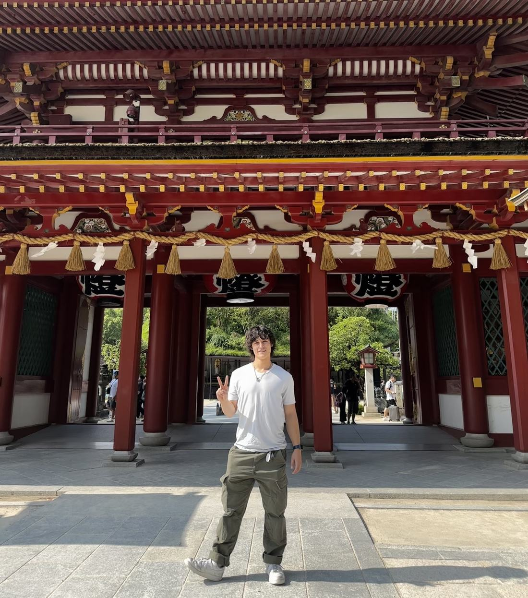

スポンサーSponsorships
Partner with まだまだJared.
I create Japanese-immersion content for English-speaking learners who want to make Japanese a part of their everyday life: reading, watching, listening and eventually speaking, with tools and systems they can actually use.
Watch the channel
一Overview / 概要
Overview
- Subscribers
- 13.5K
- As of Sep 23, 2026
- Long-form views a month (average)
- 33K
- Jun 1–Sep 21, 2026
- Views, all formats
- 146K
- Jun 23–Sep 21, 2026
- Views from the US, UK, Canada & Australia
- 39%
- Jun 23–Sep 21, 2026
Daily views
Views by format
二Audience / 視聴者
Who's watching.
Where viewers are
Share of views · Jun 23–Sep 21, 2026
Who they are
- English-speaking Japanese learners
- Learning through immersion: reading, listening and watching Japanese media
- Building their own study setups with tools like Anki and Yomitan
What they're into
- Immersion
- Anki
- Yomitan
- Migaku
- Manga
- Anime
- Reading
- Speaking practice
- Japanese media
- Learning tools
三What performs / 人気の動画
Videos people keep coming back to.
The channel covers a few kinds of video. Guides and setup videos keep being found through search for months after they're published, so an integration in one keeps working.
Tools & setup
- Anki & Yomitan Setup · 14.3K views, Jun 23–Sep 21, 2026
- Memorize Japanese Vocab
Guides & resources
Speaking & practical Japanese
- Practice with Natives for FREE
- How to Keep Conversations Going in Japanese · 9.7K views in its first 5 days
Rankings
四Past partnerships / 実績
Brands I've worked with.
What each campaign was and why it fit the channel. Where I have numbers, they're shown with their dates.
italki
- Campaign
- Flat-fee integration
Keychron
- Campaign
- Integration + product
Migaku
- Campaign
- Ongoing affiliate partnership
五Opportunities / プラン
Ways to work together.
A starting point for a conversation, not a menu. Prices are where each option starts; the final scope depends on the video, timing and what you need.
Paid-ad usage rights and category exclusivity are priced separately. Custom packages are welcome.
六Brand fit / 相性
What fits the channel.
- Japanese tutoring
- Japanese books, manga and e-books
- Japan travel
- Study abroad
- Japanese learning and reading tools
- Keyboards and desk gear, when they fit learning content
- Japan-related subscriptions
- Select creator tools
I only take partnerships that make sense for the audience and the video. My goal is for sponsored content to feel like a natural part of the channel rather than an interruption.
Not a fit: AI tools, crypto and NFTs.
七Why / 理由
A learner talking to learners.
-
浸る to soak in
Input first
The channel is built on immersion: learning Japanese from things you actually want to read, watch and listen to.
-
英語 English
Made for English speakers
Videos are in English, for learners in the US, UK, Canada, Australia and everywhere else.
-
学ぶ to learn
Still learning, on purpose
まだまだ means "still a long way to go." I'm learning alongside the audience, and that's the point.
-
仲間 companions
Not a guru
No native-level act and no shortcuts. I recommend what I actually use.
-
輪 circle, community
An engaged community
Viewers ask questions, share their setups and keep conversations going in the comments and on Discord.
-
実用 practical use
Practical systems
Guides end with something viewers can set up and use the same day.
八Contact / 問い合わせ
Interested in working together?
Tell me a little about your brand and what you have in mind. I reply to every sponsorship inquiry, usually within 48 hours. Prefer email? Write to Jared@jareddesu.com.